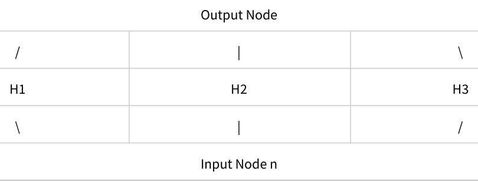
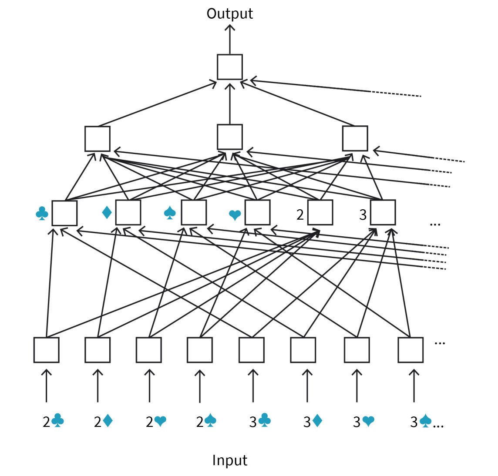

DLMAIRIL01 - Source-derived printable review sheet
Condensed from the same learning note. No additional teaching topics or official examination questions. Formulas and fonts render offline.
Policy evaluation learns returns or bootstrapped values; Q-learning and SARSA turn these ideas into control, while continuing exploration, replay and neural-network approximation address data and representation limitations.
| Term | Meaning |
|---|---|
| Monte Carlo evaluation | Estimate policy value by averaging observed episode returns. |
| First-visit / every-visit | Use one return per state per episode / all state occurrences. |
| Target | The quantity toward which an update moves the estimate. |
| Learning rate | The step size controlling the magnitude of each update. |
| Bootstrapping | Using an estimated continuation value inside the update target. |
| Temporal difference | Sampled reward plus estimated continuation minus the current estimate. |
| Trace decay | The parameter controlling the influence of later temporal differences. |
| Sparse rewards | Informative nonzero rewards occur rarely. |
| SARSA | An on-policy update using the observed successor action. |
| Function approximation | Represent values with a parameterized function instead of independent table entries. |
Monte Carlo target: observed episode return. TD(0) target: .
Q-learning target (cost convention): .
SARSA target: , with selected by the behavior policy.
In the book's episodic evaluation example, an episode produces . Its suffix is also a return sample for a state visited at position . Reusing these suffixes evaluates multiple states from one episode.
In the poker-network example above, a card input equals one when that card is in the hand. Suit/rank connections summarize the hand before later layers estimate its value. The original architecture figure is therefore part of the explanation, not a separate decoration.
Study these with the detailed explanation in the linked Obsidian note.


Answer before expanding. Open the answers before printing to include them.
Run episodes with the policy and average returns associated with each state.
First-visit uses the first occurrence per episode; every-visit uses all occurrences.
Old estimate plus learning rate times target minus old estimate.
It replaces the accumulated estimate entirely with the latest noisy target.
An estimated value is used as part of the update target.
Estimator variance plus squared estimator bias.
The book identifies the one-step bootstrap and Monte Carlo endpoints respectively.
The influence of later temporal differences in the update.
Q-learning uses the best estimated successor action; SARSA uses the action selected by the current policy.
Unchosen actions receive no new evidence, so initially wrong estimates may never be corrected.
Greedy action selection with probability one minus epsilon and exploration with probability epsilon.
Relabel an actually achieved outcome as the goal and learn from that successful alternative task.
Compact representation and useful value estimates without an independent table entry or visit for every state.
Features such as suit and rank counts derived from card-indicator inputs.
Learning note: 01_unit_1_introduction_to_reinforcement_learning/02_components_of_reinforcement_learning_systems.
Course book pp. 32-50. Printed page + 2 = PDF viewer page. Personal-study use.